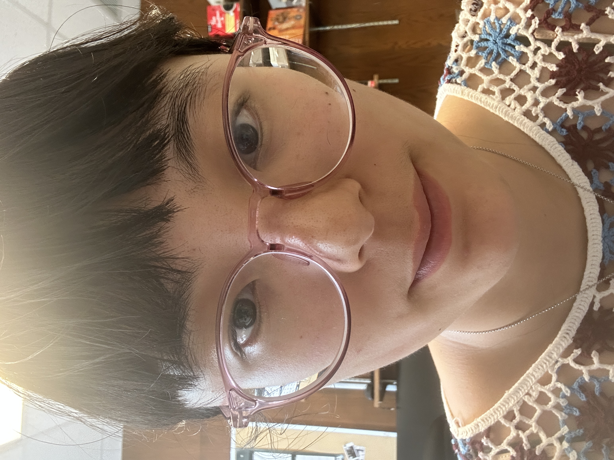
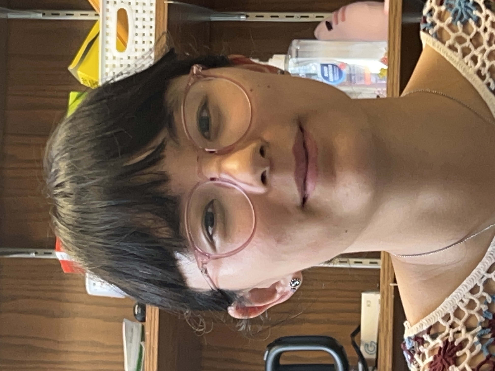
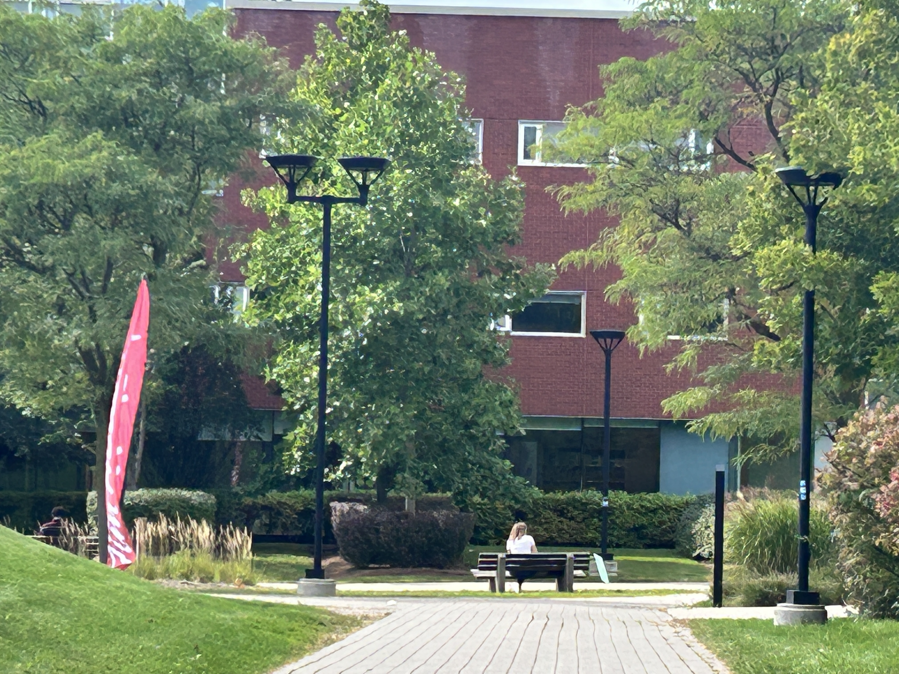
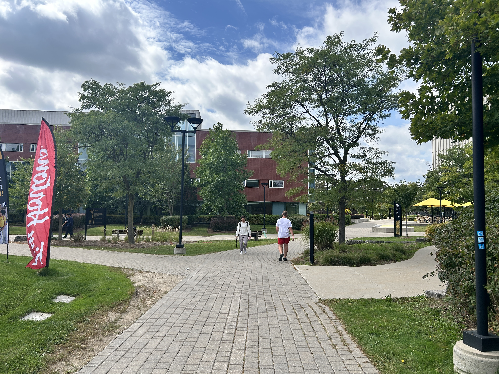
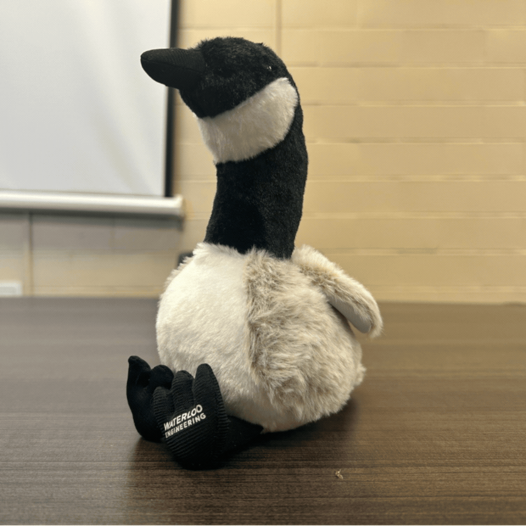

To kick this assignment off, I first took a selfie up close to my face, and then took a few steps away and took the same image by zooming into my face. While I'd like to think I look good in all photos, the second one will feature less distortions. While taking a close-up selfie, the distance each of the facial features are from the camera vary significantly, as our noses might be twice as close to the camera as out ears and jaw, which causes the nose to be disproportionately large and the sides of the face to be compressed. Taking the photo from a distance will bring the different features to around the same distance from the camera, creating an image more similar to when other people look at you.


Next, I repeated this process with some scenery outside DWE. When it comes to scenes, the same logic as selfies applies, however the opposite effect is desired. From a distance, the items of interest, perhaps the bench, Tim Hortons flag and street light are all around the same distance from the camera, so they appear flat in the image. But when I'm standing closer, the distances begin to vary significantly, giving us a sense of depth in the image.

Finally I created a cinematic scene of Mr. Goose looking into the distance with melancholy, perhaps pondering the philosophical issues of this world, with a dolly zoom. This effect is created by moving away from the subject while simultaneously zooming in, creating an effect where the background seems to be racing past the subject.
Prokudin-Gorskii was a Russian photographer who developed a method for capturing colour images in the 20th century. He did this by photographing the same scene three times, each time with a different colour filter (red, green and blue). The three images are then aligned and combined to create a full-colour image. The Library of Congress in the United States has digitized his collection and made it available online, alllowing us to download the images, and recreate the scenes in colour with modern techniques of image alignment and photo editing.
To start off, I visited the Library of Congress to see how they formed the colour images from Prokudin-Gorskii's images. I was then able to create a script in Python to automate some parts of the proceess, with intermediate steps that allow the user to interact with the process. I've attached the outputs of the riverside scene along with the functionality of my script.
The in put of the script is a vertical strip with the three filtered images in the order R, G, B.

The script then converts the image to 8-bit scale, removes some borders, and splits the image into the individual Red, Green, and Blue layers. There is the option to manually crop the borders of the individual layers, as I found that thresholding cropped and contrast cropping were not always accurate.
Then, the user is to select two anchor points. An anchor point is an image feature that you can safely identify in all three images that can be used for image alignment, such as the corner of a building, or the tip of a tree. Two anchors are the default, but the user can select more or less in the terminal window.


Using these anchor points as a starting point, the script aims to minimize a sum of squared differences between the pixel values in the three layers by searching nearby locations. You can set this value in the terminal, I started with a value of 40. Once this equation is minimized, the aligned layers are combined to form the final colour composite. Let's see how we did just now!